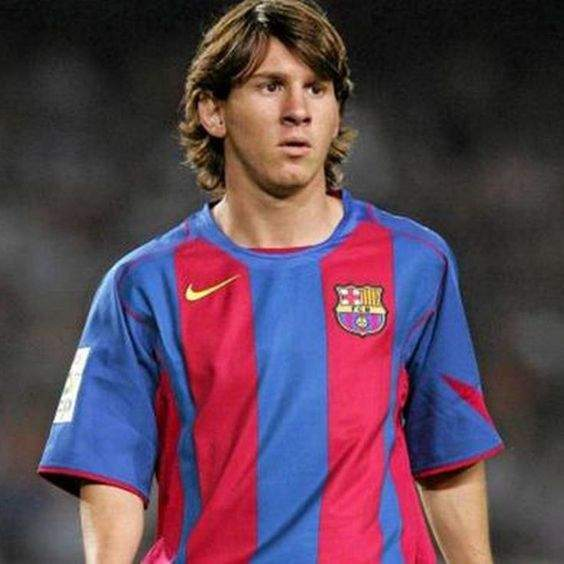
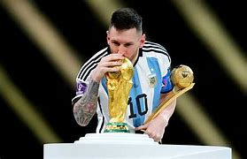

Lionel Andrés Messi Cuccittini nació el 24 de junio de 1987 (36 años) en Rosario, Argentina. En su barrio corría el rumor que un niño de baja estatura era capaz de llevar el balón pegado a sus pies y anotar goles con una facilidad nunca antes vista. Hoy, con 1,69m de altura, el niño de Rosario es el futbolista con más títulos en la historia del fútbol.
Comenzó a jugar en el club local "Grandoli" a la edad de 6 años, motivado por su abuela. Su espíritu de campeón imparable ya destacaba, y no pasó mucho tiempo antes de fichar por el Newell's Old Boys unos meses después. Su habilidad técnica era espectacular y desde el principio se destacó en el equipo infantil. Lionel Messi también fue parte del equipo conocido como "la Máquina del 87", que se destacaba como el mejor equipo infantil del Newell's debido a la cantidad de goles que marcaban. En 1997, debido a su menor estatura en comparación con sus compañeros y hermanos, sus padres llevaron a Messi al médico. Fue diagnosticado con deficiencia de la hormona del crecimiento y comenzó un costoso tratamiento para su familia. Buscando una solución para pagar el tratamiento hormonal y apoyar el desarrollo deportivo de Leo, su padre lo llevó a probarse en River Plate. Con solo un par de toques, captó la atención de los entrenadores, pero el traspaso no fue posible debido a desacuerdos con Newell's.
A los 12 años, después de que el Newell's Old Boys se negara a pagar su tratamiento, Messi viajó a Barcelona junto a su padre para probarse en el Camp Nou. Después de verlo, el FC Barcelona decidió ficharlo y financiar su tratamiento. Aunque hubo dificultades con algunos directivos del club, finalmente se firmó un primer contrato en una servilleta durante una conversación en una cafetería. Un mes después, llegó el contrato oficial y toda la familia abandonó Rosario para mudarse a España y apoyar a Leo. Messi pasó por todas las categorías inferiores del Barcelona, jugando con los equipos sub-16, sub-19, Barcelona C, Barcelona B y finalmente, con el primer equipo. En 2003, Leo acompañó al equipo de la Primera División para disputar un partido amistoso en Oporto y sorprendió al debutar en territorio portugués. Un año después, en octubre de 2004, hizo su debut oficial en la Liga española. Del mano de Ronaldinho, Messi creció en el equipo catalán y posteriormente vistió el número "10" que su predecesor había defendido con orgullo.
Algunos de los títulos que ganó con el FC Barcelona incluyen 10 campeonatos de La Liga, ocho Supercopas de España, siete Copas del Rey y cuatro títulos de la UEFA Champions League. En total jugó 778 partidos, anotó 672 goles y repartió 303 asistencias con el equipo. Además, a lo largo de su carrera Messi ha sido galardonado con premios individuales como el "Balón de Oro" en siete ocasiones, la “Bota de Oro” en seis ocasiones, el Premio Laureus en dos ocasiones , además del "Mejor Jugador" y “The Best” de la FIFA. En julio de 2021 y con la selección Argentina, Messi levantaría su primer título “oficial” al ganar la CONMEBOL Copa América en Brasil. Un gol de Ángel Di María contra los anfitriones le daría a la Albiceleste un título que no conseguía desde 1993. En agosto del mismo año, Messi abandonó el FC Barcelona después de más de 20 años en el club y fichó por el Paris Saint-Germain (PSG) de Francia. En su primera temporada ayudó al equipo a ganar la Ligue 1. En junio de 2022, Messi ganó un nuevo título con Argentina al ganar la “Finalissima” ante Italia. Este trofeo enfrentaba al campeón de la Eurocopa con el campeón de la Copa América. En diciembre de 2022 Messi jugó su quinto Mundial de la FIFA en Catar. En esta ocasión, lideró a la selección argentina al título tras ganar a Francia por penales. Messi se llevó por segunda vez el "Balón de Oro del Mundial" y terminó el torneo con siete goles, tres asistencias, además de cinco premios al mejor jugador del partido. Tras conquistar el Mundial, Messi disputaría el resto de su segunda temporada en París y ayudaría de nuevo al club a ganar el Trophée des Champions y la Ligue 1. Tras dos años en el club, el jugador confirmó a principios de Junio de 2023 que abandonaba Francia. Messi terminó su etapa en el PSG con 75 partidos, 32 goles, 35 asistencias y tres títulos. Recientemente, en junio de 2023, Messi anunció que iría al Inter Miami de la Major League Soccer (MLS) en Estados Unidos, marcando un nuevo capítulo en su carrera futbolística.
